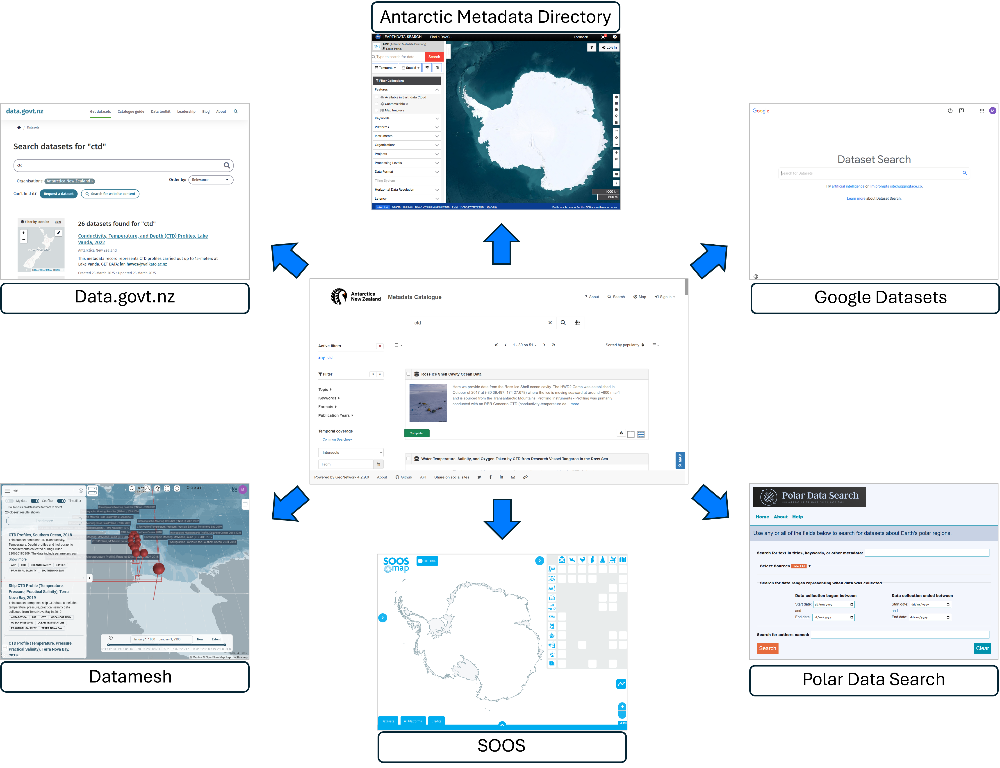

Connected Portals#
The catalogue is integrated with other data aggregators and federated search engines.
{kind=link}

Oceanum Datamesh#
The Oceanum.io environmental intelligence platform turns environmental data into real-world knowledge, insights and applications. The platform removes the friction of accessing and connecting a wide range of environmental data to your analytics and development workflows. By providing a single easy-to-use interface and API, you can spend more time on your core business or research and less time on data wrangling.
Oceanum DatameshPolar Data Search – World Data System#
Data search portal providing federated search capability through a single interface across numerous polar data repositories.
Polar Data SearchSouthern Ocean Observing System (SOOS)#
SOOSmap serves up curated and standardised observation data from oceanographic and Antarctic research programs from many nations and scientific disciplines. It is built around individual observing platforms or sampling events (e.g. an Argo float or plankton trawl). Specifically, it allows users to discover and access circumpolar data coming from several international research centres and data assemblers, oceanographic repositories and marine infrastructures in the Antarctic.
SOOSmapAntarctic Metadata Directory (AMD)#
The Antarctic Metadata Directory is the largest collection of Antarctic dataset descriptions in the world, holding over 7700 dataset descriptions from 25 countries.
Antarctic Metadata DirectoryGoogle Dataset Search#
Google Dataset Search is a search engine that helps users discover datasets stored across the web. It facilitates finding datasets hosted by various organisations, publishers, and researchers.
Google Dataset SearchData.govt.nz#
Data.govt.nz helps people discover, collect, manage, use, share, and re-use data. Users can search for and download thousands of freely usable datasets released by New Zealand Government organisations, as well as finding out about how to use and release open data effectively.
Data.govt.nz